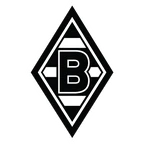
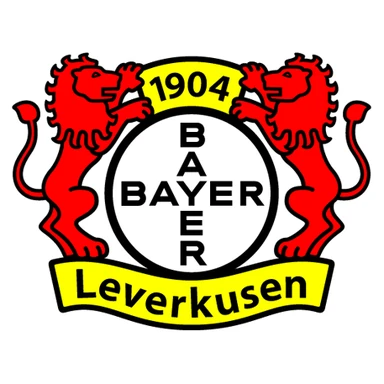
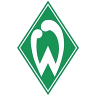
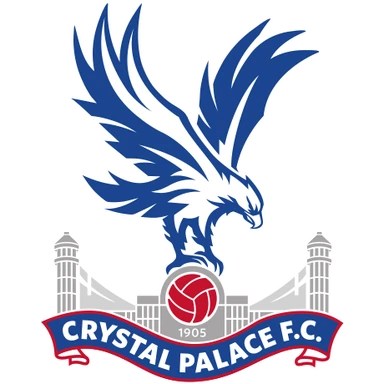
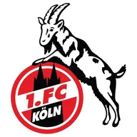

Хоффенхайм — Шальке итог матча 8 ноября
Статистика матча
ХоффенхаймШальке
- 15Удары23
- 7Удары в створ6
- 49 %Владение мячом51 %
- 6Угловые4
Данные ESPN.
- ТурнирБундеслига
Коротко о матче
Хоффенхайм — Шальке 2:1: хозяева победили.
По форме разница была заметной: в пяти последних матчах Хоффенхайм — 3 победы, Шальке — ни одной победы. По голам за эти пять матчей: Хоффенхайм — в среднем 1,8 забито и 0,8 пропущено, Шальке — 0,2 и 1,0.
Стоит учесть и площадку: дома Хоффенхайм — 3 победы в 6 матчах, на выезде Шальке — 1 победа в 4.
Форма: последние матчи
Хоффенхайм 3 победы из 5

В2:1- В3:0

В3:0
П0:2
Н1:1
Шальке 0 побед из 5
- Н0:0
- П1:2
- П0:1

Н0:0 П0:2
П0:2
Положение в таблице
| Команда | Место | И | В | Н | П | Голы | Очки |
|---|---|---|---|---|---|---|---|
| Хоффенхайм | 9 | 9 | 4 | 0 | 5 | 16:17 | 12 |
| Шальке | 17 | 9 | 1 | 3 | 5 | 5:11 | 6 |
Другие матчи Бундеслиги в этот день
Куда дальше
Все прогнозы дня — в TelegramПрогнозы на КХЛ, НХЛ и футбол, итоги каждое утро. Бесплатно.
Открыть каналМатериалы носят информационный характер и не гарантируют результат. Реклама букмекеров на сайте не размещается. Сайт только для совершеннолетних (18+).